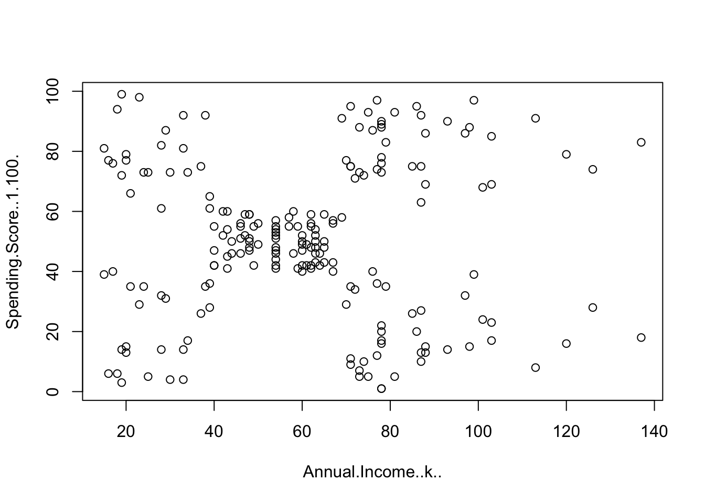
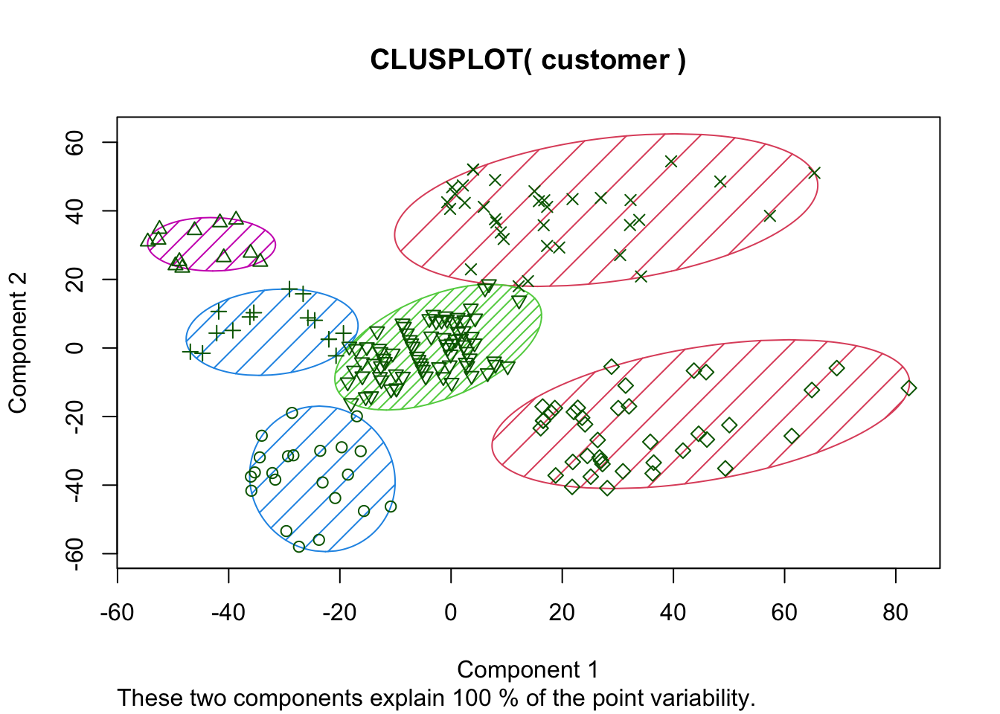
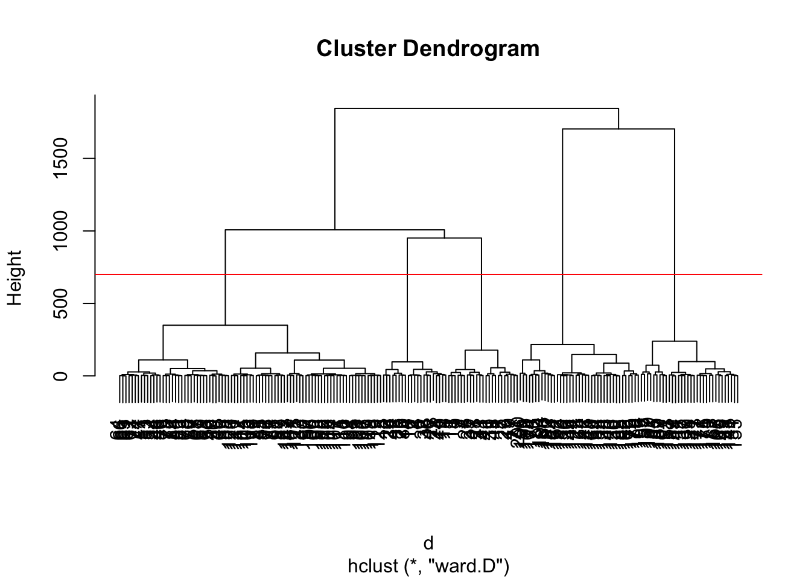

Clustering involves grouping similar data points together, revealing inherent structures within data sets. In this blog post, we will dive into the realm of clustering, exploring its concepts, applications, and implementations in R. To enhance understanding, we will include some code snippets and visualizations using the Mall Customers data set, offering an interesting perspective on the power of clustering.
Clustering is a form of unsupervised learning where the algorithm identifies patterns or groups within a data set without prior knowledge of the labels. The objective is to group similar data points, making it a valuable tool for tasks such as customer segmentation, anomaly detection, and image segmentation.
Types of Clustering
K-Means Clustering
K-Means is a popular partitioning method where the algorithm divides the data set into “k” clusters, aiming to minimize the within-cluster sum of squares.
Hierarchical Clustering
Hierarchical clustering builds a tree-like structure of clusters, allowing for a visual representation of the relationships between data points.
Implementing Clustering for Segmentation
Data Preparation
customer <- customer[,4:5]plot(customer)

Applying K-Means
Based on the scatter plot above, and to apply basic K-means algorithm, we use number of clusters = 3.
Instead intuitively picking the number of factors, we can use code to assess the within-cluster sum of squares (WCSS) for different values of K and look for the “elbow” point where the rate decrease in WCSS starts to decrease.
set.seed(123)sum_of_squares <-vector()for (i in1:10) { x <- (sum(kmeans(customer, i)$withinss)) sum_of_squares[i] = xprint(x)}
## visualizing the results for k=6library(cluster)clusplot(customer, model_k6$cluster, lines=0, shade=T, color=T)

Applying Hierarchical Clustering
In hierarchical clustering, we will use euclidean distance to learn distance between the data points.
d <-dist(customer, method ='euclidean')
library(repr)options(repr.plot.width=15, repr.plot.height =12)## creating a dendogram to visualize the hierarchydendogram <-hclust(d, method ='ward.D')plot(dendogram)abline(h=700,col='red')

Red line in the diagram above, cut the 5 hierarchies that have high euclidean distance.
hier <-hclust(d, method ='ward.D')y_hier <-cutree(hier, 5)y_hier
The plot above offer a visual representation of clusters for the data set.
Clustering is a versatile technique that uncovers patterns and structures within data sets. By implementing clustering algorithms such as K-Means and Hierarchical Clustering. We were able to gain valuable insights into the inherent relationships among data points. The visualizations not only aid in understanding the results but also serve as powerful tools for conveying complex patterns.